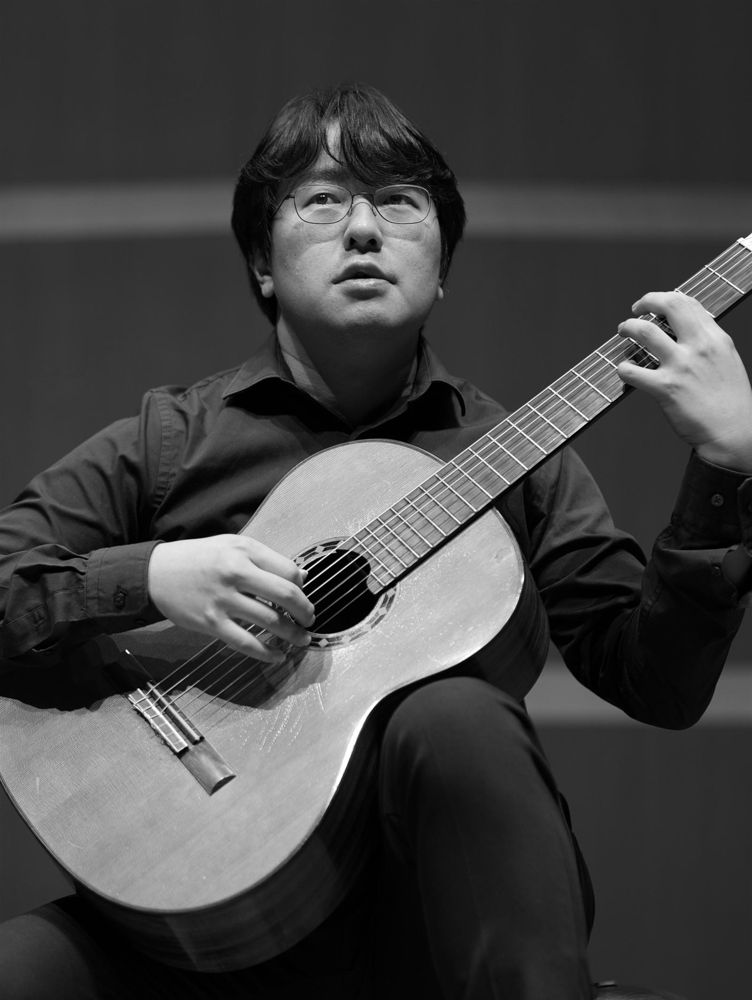
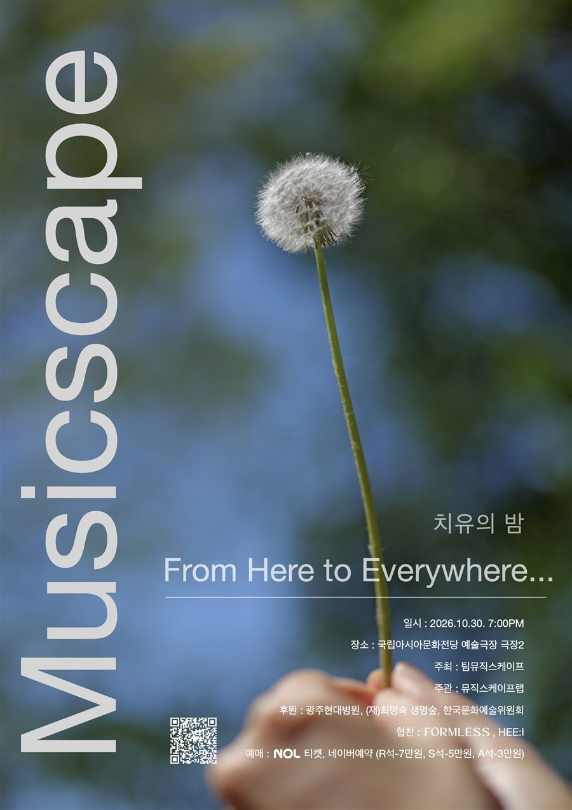
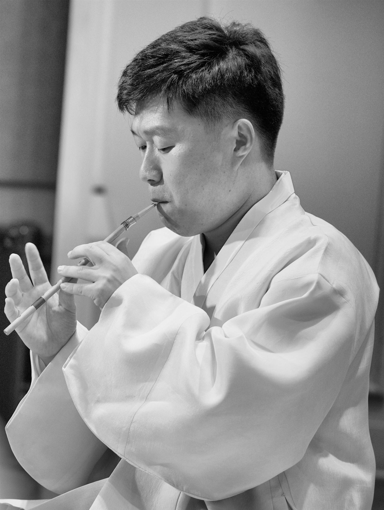
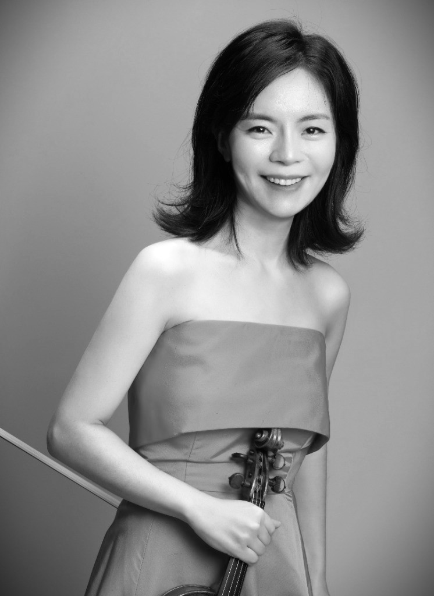

Composer · Guitar
최인
작곡 · 연출 · 음악감독. 기타와 영상, 인터랙티브 그래픽을 통해 음악의 표현 영역을 확장해 왔습니다.

기타·피리·바이올린 연주에 프로젝션 매핑, 공간음향, 조명과 향이 더해졌습니다. 네 곡의 무대 장면과 악기 구성, 연주진을 살펴보세요.

01 / 04
From here to everywhere
기타 · 바이올린
최인(기타) · 송지원(바이올린)

곡을 선택하면 프로그램북에 실린 해설 원문과 연주진을 볼 수 있습니다. 당일 실제 공연 순서는 최종 큐시트 확인이 필요합니다.
실제 관객은 294명이며 아래 결과는 익명 설문 응답 173건을 집계한 수치입니다.
공연 전 상태는 공연 후에 회상해 응답하는 방식으로 물었습니다. 전체 집계에는 공연 시작 전 제출된 응답 3건이 포함됩니다. 이 수치는 응답자의 경험을 보여주며 치료 효과나 공연과의 인과관계를 입증하지 않습니다.
공연을 알린 공식 포스터와 무대, 객석의 기록입니다.

Artists
기타와 피리, 바이올린. 각기 다른 소리가 만나 한 무대의 이야기를 만들었습니다.

Composer · Guitar
작곡 · 연출 · 음악감독. 기타와 영상, 인터랙티브 그래픽을 통해 음악의 표현 영역을 확장해 왔습니다.

Piri
피리정악 및 대취타 이수자. 전통음악의 결을 현대적 감각으로 이어갑니다.

Violin
바이올리니스트. 국내외 오케스트라와 실내악 무대에서 활동하고 있습니다.
Creative Team
음악과 영상, 소리와 빛, 공간의 감각을 함께 만든 참여진을 기록합니다.
광주현대병원 · 재단법인 최명숙 생명숲 · 한국문화예술위원회 · 이용한 기타 · FORMLESS · HEE : I
Press & Media
결과보고서에 수록된 공연 전후 보도 10건을 모았습니다. 기사 제목에 원문 주소를 연결했으며, 접속을 확인하지 못한 링크는 따로 표시했습니다.